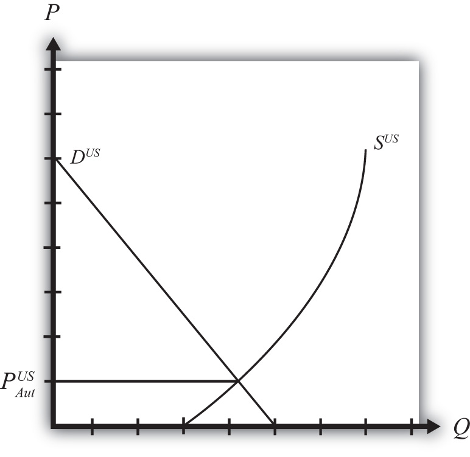
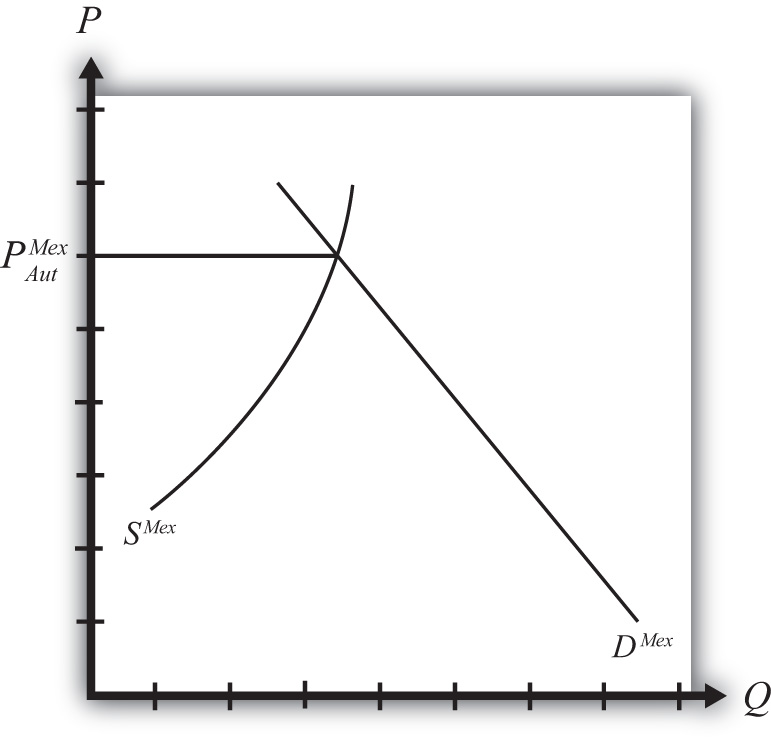
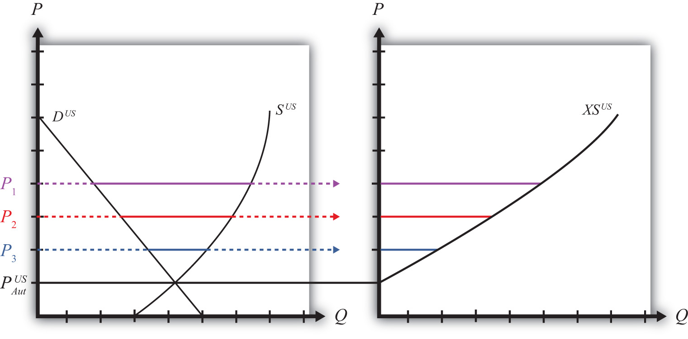
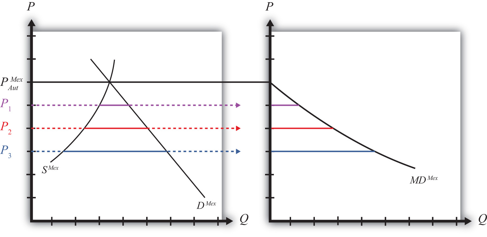
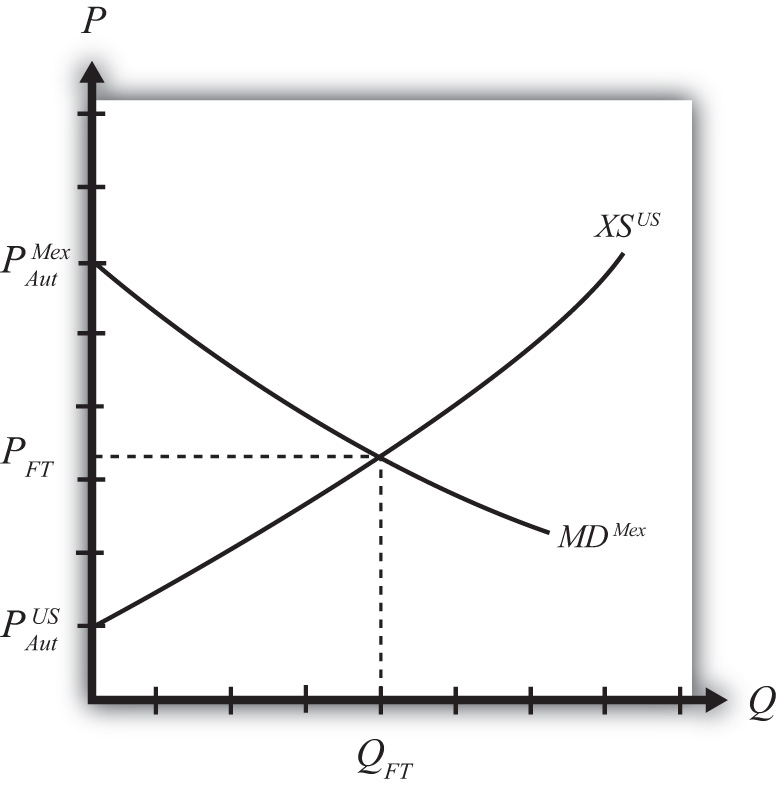
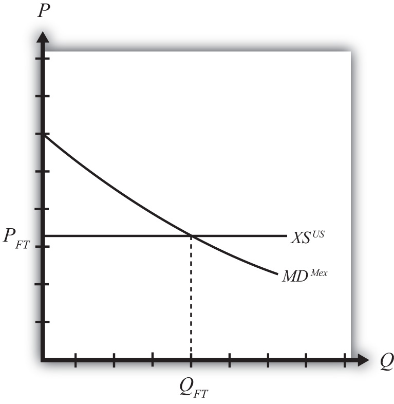

Figure 7.1 "U.S. Wheat Market: Autarky Equilibrium" depicts the supply and demand for wheat in the U.S. market. The supply curve represents the quantity of wheat that U.S. producers would be willing to supply at every potential price for wheat in the U.S. market. The demand curve represents demand by U.S. consumers at every potential price for wheat in the U.S. market. The intersection of demand and supply corresponds to the equilibrium autarky price and quantity in the United States. The price, PAutUS, is the only price that will balance domestic supply with domestic demand for wheat.
Figure 7.1 U.S. Wheat Market: Autarky Equilibrium
Figure 7.2 "Mexican Wheat Market: Autarky Equilibrium" shows the supply and demand for wheat in the Mexican market. The supply curve represents the quantity of wheat that Mexican producers would be willing to supply at every potential price in the Mexican market. The demand curve represents demand by Mexican consumers at every potential price for wheat in the Mexican market. The intersection of demand and supply corresponds to the equilibrium autarky price and quantity in Mexico. The price, PAutMex, is the only price that will balance Mexican supply with demand for wheat.
Figure 7.2 Mexican Wheat Market: Autarky Equilibrium
The curves are drawn such that the U.S. autarky price is lower than the Mexican autarky price. This implies that if these two countries were to move from autarky to free trade, the United States would export wheat to Mexico. Once trade is opened, the higher Mexican price will induce profit-seeking U.S. firms to sell their wheat in Mexico, where it commands a higher price initially. As wheat flows into Mexico, the total supply of wheat rises, which will cause the price to fall. In the U.S. market, wheat supply falls because of U.S. exports. The reduced supply raises the equilibrium price in the United States. These prices move together as U.S. exports rise until the prices are equalized between the two markets. The free trade price of wheat, PFT, is shared by both countries.
To derive the free trade price and the quantity traded, we can construct an export supply curve for the United States and an import demand curve for Mexico. Notice that at prices above the autarky price in the United States, there is excess supply of wheat—that is, supply exceeds demand. If we consider prices either at or above the autarky price, we can derive an export supply curve for the United States. The equation for export supply is given by
where XSUS(.) is the export supply function, SUS(.) is the supply function for wheat in the United States, and DUS(.) is the demand function for wheat in the United States. Each function is dependent on the U.S. price of wheat, PUS.
Figure 7.3 Deriving the U.S. Export Supply Curve
Graphically, export supplyThe quantity of a product a country would wish to export at a particular price. The export supply curve is the schedule of export supply at every potential price (usually prices above the country’s autarky price). is the horizontal difference between the supply and demand curve at every price at and above the autarky price, as shown in Figure 7.3 "Deriving the U.S. Export Supply Curve". At the autarky price, PAutUS, export supply is zero. At prices P1, P2, and P3, export supply is given by the length of the like-colored line segment. To plot the export supply curve XSUS, we transfer each line segment to a separate graph and connect the points, as shown on the right in Figure 7.3 "Deriving the U.S. Export Supply Curve". The export supply curve gives the quantities the United States would be willing to export if it faced prices above its autarky price.
In Mexico, at prices below its autarky price there is excess demand for wheat since demand exceeds supply. If we consider prices either at or below the autarky price, we can derive an import demand curve for Mexico. The equation for import demand is given by
where MDMex(.) is the import demand function, DMex(.) is the demand function for wheat in Mexico, and SMex(.) is the supply function for wheat in Mexico. Each function is dependent on the Mexican price of wheat, PMex. Graphically, import demandThe quantity of a product a country would wish to import at a particular price. The import demand curve is the schedule of import demand at every potential price (usually prices below the country’s autarky price). is the horizontal difference between the demand and supply curve at every price at and below the autarky price, as shown in Figure 7.4 "Deriving the Mexican Import Demand Curve". At the autarky price, PAutMex, import demand is zero. At prices P1, P2, and P3, import demand is given by the length of the like-colored line segment. To plot the import demand curve MDMex, we transfer each line segment to a separate graph and connect the points, as shown on the right in Figure 7.4 "Deriving the Mexican Import Demand Curve". The import demand curve gives the quantities Mexico would be willing to import if it faced prices below its autarky price.
Figure 7.4 Deriving the Mexican Import Demand Curve
The intersection of the U.S. export supply with Mexican import demand determines the equilibrium free trade price, PFT, and the quantity traded, QFT, where QFT = XSUS (PFT) = MDMex(PFT). See Figure 7.5 "Depicting a Free Trade Equilibrium". The free trade price, PFT, must be the price that equalizes the U.S. export supply with Mexican import demand. Algebraically, the free trade price is the price that solves
Figure 7.5 Depicting a Free Trade Equilibrium
This implies also that world supply is equal to world demand since
and
The small country assumption means that the country’s imports are a very small share of the world market—so small that even a complete elimination of imports would have an imperceptible effect on world demand for the product and thus would not affect the world price.
To depict a free trade equilibrium using an export supply and import demand diagram, we must redraw the export supply curve in light of the small country assumption. The assumption implies that the export supply curve is horizontal at the level of the world price. In this case, we call the importing country small. From the perspective of the small importing country, it takes the world price as exogenous since it can have no effect on it. From the exporter’s perspective, it is willing to supply as much of the product as the importer wants at the given world price.
Figure 7.6 Free Trade Equilibrium: Small Country Case
The free trade price, PFT, is the price that prevails in the export, or world, market. The quantity imported into the small country is found as the intersection between the downward-sloping import demand curve and the horizontal export supply curve.
Jeopardy Questions. As in the popular television game show, you are given an answer to a question and you must respond with the question. For example, if the answer is “a tax on imports,” then the correct question is “What is a tariff?”